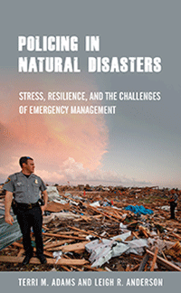

<HTML><head><script> (function(i,s,o,g,r,a,m){i['GoogleAnalyticsObject']=r;i[r]=i[r]||function(){  (i[r].q=i[r].q||[]).push(arguments)},i[r].l=1*new Date();a=s.createElement(o),  m=s.getElementsByTagName(o)[0];a.async=1;a.src=g;m.parentNode.insertBefore(a,m)   })(window,document,'script','//www.google-analytics.com/analytics.js','ga');   ga('create', 'UA-43183130-1', 'temple.edu');   ga('send', 'pageview'); </script><title>Terri M. Adams and Leigh R. Anderson: Policing in Natural Disasters - Print</TITLE><link rel="stylesheet" href="../general.css" type="text/css"><SCRIPT LANGUAGE = JAVASCRIPT></SCRIPT></HEAD><BODY LINK="#3152A5" VLINK="#3152A5" ALINK=Gray BGCOLOR=White><CENTER><P CLASS=intro><br>How disaster work impacts law enforcement officers and first responders based on some of the worst disasters in modern history<br><br></P></CENTER><br>&nbsp;<!--none//--><Table width="100%" border=0 cellspacing=5><tr><td width="175" align="center"></td><td><h1 class = "booktitle">Policing in Natural Disasters</h1> <h1 class = "subtitle">Stress, Resilience, and the Challenges of Emergency Management</h1><h3 class="author">Terri M. Adams and Leigh R. Anderson </h3><p class="info">paper EAN: 978-1-4399-1837-1 (ISBN:1-4399-1837-6)</br>$29.95, Jan 19, <font color=#990033>Not Yet Published Preorder</font><br><p class="info">cloth EAN:  978-1-4399-1836-4 (ISBN:1-4399-1836-8)</br>$94.50, Jan 19, <font color=#990033>Not Yet Published Preorder</font><br><p class="info">Electronic Book EAN: 978-1-4399-1838-8 (ISBN:1-4399-1838-4)</br>$29.95, <font color=#990033>Not Yet Published Preorder</font><br><p class="info">248 pp, 5.25 x  8.5, 1&nbsp;figures 1 figs., 4 halftones</p></td></tr></table></P></td></tr></table><BR><BLOCKQUOTE></BLOCKQUOTE><P><P><p>When natural disasters and emergencies strike, the short- and long-term effects of these events on first responders-the very people society relies upon in the midst of a catastrophe-are often overlooked. <i>Policing in Natural Disasters </i>provides a comprehensive analysis of the major challenges faced by law enforcement officers during extreme crisis events. Terri Adams and Leigh Anderson examine the dilemmas police departments face as well as the impact of the disasters on the professional and personal lives of the officers. Case studies explore the response and recovery phases of emergencies including Hurricane Katrina, the 2010 earthquake and subsequent tsunami in Santiago, Chile, and the Superstorm Tornado Outbreak in 2011.   <br/><br/> <i>Policing in Natural Disasters </i>was inspired by the personal accounts of triumph and tragedy shared by first responders. It provides an understanding of first-responder behaviors during disasters, as well as the preparedness, mitigation, response and recovery policy implications for first responders and emergency managers. As first responders must frequently cope with stress, uncertainty, and threats to their health and safety during high-consequence events, Adams and Anderson provide lessons from first-hand experiences of police officers that can lead to better management in times of crisis.<br><P CLASS="top"><A HREF="#top">BACK TO TOP</A></P></p><P></p><p></b></p><BR><p></p></P><BR>&nbsp;<p><P><H2  class="inpageheading"><A NAME="author bio"></a>About the Author(s)</H2><p><b>Terri M. Adams</b> is an Associate Professor of Sociology and Criminology and Deputy Director, National Oceanic and Atmospheric Administration Center for Atmospheric Sciences and Meteorology (NCAS-M) at Howard University.<br><p><b>Leigh R. Anderson</b> is the Chief Performance Analyst in the Public Safety Section of the City of Chicago Office of Inspector.<br><P CLASS="top"><A HREF="#top">BACK TO TOP</A></P></P><p><h2 class="inpageheading"><a name="subjects"></a>Subject Categories</h2> <p><a href="http://www.temple.edu/tempress/sociology.html" target="_top">Sociology</a> <br><a href="http://www.temple.edu/tempress/law.html" target="_top">Law and Criminology</a> <br><a href="http://www.temple.edu/tempress/labor.html" target="_top">Labor Studies and Work</a> <br><a href="http://www.temple.edu/tempress/political.html" target="_top">Political Science and Public Policy</a> <br><a href="http://www.temple.edu/tempress/nature.html" target="_top">Nature and the Environment</a> </p></p><P></P><P>&nbsp;</P><font face="Arial" size="1"><a href="copyright.html" OnMouseOver="window.status='Web Copyright Policy';return true;" OnMouseOut="window.status=''" TITLE="Web Copyright Policy">&copy;</a> _______________ <a href="http://www.temple.edu" target="new" OnMouseOver="window.status='Link to Temple University home page';return true;" OnMouseOut="window.status=''" TITLE="Link to Temple University home page">Temple University</a>. All Rights Reserved. This page: <a href="http://www.temple.edu/tempress/titles/2553_reg.html"OnMouseOver="window.status='Link to the book page';return true;" OnMouseOut="window.status=''" TITLE="Link to the book page">http://www.temple.edu/tempress/titles/2553_reg.html.</a></font></BODY></HTML>                    
